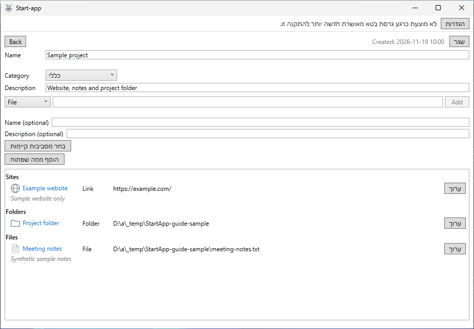

Benutzerhandbuch
Führung Start-app
Schritt für Schritt in Version 0.1.0-proto.2: Arbeitsbereich erstellen, Elemente hinzufügen, Aufnahme, Start und Speichern - mit echten Screenshots der App und den Einschränkungen, die man kennen sollte.
Ein Evaluierungsprototyp, keine stabile Version
Anleitungsversion: 0.1.0-proto.2
Keine Episoden gefunden. Versuchen Sie es mit einem anderen Wort oder löschen Sie die Suche.
Was ist das Start-app
Start-app Speichert Programme, Ordner, Dateien und Links unter einem Umgebungsnamen. Wenn Sie den Computer das nächste Mal öffnen, öffnet der Befehl „Ausführen“ alle Elemente zusammen, ohne jedes einzelne erneut auszuwählen.
Diese Anleitung beschreibt Version 0.1.0-proto.2 und begleitet den gesamten Ablauf: der Hauptbildschirm, Arbeitsbereich erstellen, Elemente manuell oder per Aufnahme hinzufügen, Bearbeiten, Starten und Speichern. Kapitel Bekannte Einschränkungen Zentralisieren Sie an einem Ort alles, was die Anwendung nicht tut.
System- und Installationsanforderungen
Das Verpackungsziel ist Windows x64. Es gibt keine verifizierte Mac- oder Linux-Version.
Der Download der Version, die diese Anleitung beschreibt, 0.1.0-proto.2, befindet sich in der Versionsliste auf der Startseite, mit Versionsnummer, Dateigröße und deren sha256 zur Prüfung vor der Installation. Der Download erfolgt nur dort, nicht auf der Anleitungsseite.
Aktivierung nach Download
Der Download ist eine ZIP-Datei, kein Installationsprogramm. Nach dem Herunterladen:
- Extrahieren Sie alle Dateien aus der ZIP-Datei in einen Ordner.
- Führen Sie
Start-app.exeim Hauptordner aus. - Belassen Sie den Ordner
Appneben der Datei, und verschieben Sie immer den gesamten Ordner zusammen.
Die Anwendung beinhaltet ihre Laufzeitumgebung, sodass .NET nicht separat installiert werden muss. Keine Registrierung, kein Konto oder Login. Die Daten werden in einer lokalen Datei gespeichert%LOCALAPPDATA%\StartApp\store.json.
Was wurde getestet: Dieser Prototyp wurde als eigenständige Windows x64-Anwendung erstellt und erfolgreich auf einem gehosteten Windows Server 2025-Server gestartet und heruntergefahren. Nicht unabhängig getestet unter Windows 11 zu Hause, und es gibt keine Verpflichtung zur Mindestversion von Windows. Es gibt keine Garantie dafür, dass keine Sicherheitswarnungen oder Antivirensoftware-Warnungen angezeigt werden.
Versionsaktualisierung
Die Updateprüfung erfolgt über den Einstellungsbildschirm der App, und dort werden nur freigegebene Versionen angeboten. Der Download erfolgt von der offiziellen Website, die Installation manuell: Es gibt keine automatische Aktualisierung.

Der Hauptbildschirm: die Umgebungsansicht
Oben auf dem Bildschirm befindet sich die Liste der Umgebungen. Jede Umgebungskarte zeigt den Namen, die Beschreibung, die Kategorie, die gewählte Farbe und das Kartenbild sowie den Erstellungszeitpunkt und den Zeitpunkt des letzten Öffnens. Der Zeitpunkt des letzten Öffnens wird beim Starten einer Umgebung aktualisiert, nicht beim Öffnen eines einzelnen Elements.
Jede Karte hat eine angrenzende Schaltfläche "Starten". Ein Rechtsklick auf die Karte oder Shift+F10 auf der Tastatur öffnet ein Aktionsmenü: Anzeigen, Starten, Element hinzufügen, Karte gestalten und Kategorie bearbeiten. Unter der Liste befindet sich ein Formular zum Erstellen eines neuen Arbeitsbereichs, und in der Ecke ein Einstieg zum Aufnahmebildschirm.


Eine neue Arbeitsumgebung schaffen
Im Erstellungsformular ist der Name ein Pflichtfeld. Die Standardkategorie ist "Allgemein", und Farbe sowie Kartenbild können gewählt werden. Die Beschreibung ist optional.
Elemente manuell hinzufügen
Fügen Sie im Bildschirm mit den Umgebungsdetails Elemente von vier Typen hinzu: Site, Datei, Ordner und Software. Jeder Artikel kann mit einem eigenen Namen und einer eigenen Beschreibung versehen werden. Lokale Pfade erfordern einen vollständigen Windows-Pfad und keinen kurzen Software-Alias.
Elemente werden auf dem Bildschirm nach Typ gruppiert: Websites, Ordner, Dateien und Programme. Jede Zeile hat eine angrenzende Schaltfläche "Bearbeiten".

Die Schaltfläche "Vorhandene Arbeitsbereiche wählen" fügt dem Arbeitsbereich ein Element hinzu, das bereits in einem anderen Arbeitsbereich gespeichert ist: Typ wählen, suchen und auswählen.

Erfassung: Scannen, Auswählen und Duplizieren
Die Erfassung scannt, was gerade geöffnet ist: Programme und den Windows-Datei-Explorer sowie im Browser die Adressleiste. Die Browserquelle kennt Chrome, Edge und Brave; Derzeit gibt es keine vollständige Kompatibilitätsmatrix für jeden Browser und jede Version. Der Scan kann bis zu 10 Sekunden dauern.
Beim Erstellen eines neuen Arbeitsbereichs aus einer Aufnahme sind die gefundenen Elemente standardmäßig markiert, und nur die markierten werden dem Arbeitsbereich hinzugefügt.

Beim Hinzufügen zu einem vorhandenen Arbeitsbereich werden die Neuzugänge nebeneinander mit den gespeicherten Elementen angezeigt, markiert als Added, not saved yet. Nichts wird gespeichert, bis Sie auf Speichern klicken.

Beim Ziehen eines einzelnen Elements, das sich bereits im Arbeitsbereich befindet, wird für diesen Vorgang eine separate Bestätigung angezeigt: Erneut als separate Instanz hinzufügen? Bei der Stapelaufnahme ("Alle hinzufügen" oder "Auswahl hinzufügen") werden nur die ausgewählten Elemente hinzugefügt - ist nichts ausgewählt, werden alle hinzugefügt. Nicht doppelte Elemente werden sofort auf dem Bildschirm bereitgestellt, und alle Duplikate werden in einem einzigen gruppierten Auswahldialog gesammelt, in dem Sie markieren, was hinzugefügt werden soll.
Es gibt keinen vollständigen Duplikatschutz: Dasselbe Element kann mehr als einmal hinzugefügt werden, auch wenn es bereits im Arbeitsbereich gespeichert ist. Es lohnt sich, die Liste vor dem Speichern zu prüfen.
Bearbeitungsumgebung und Elemente
Das Rechtsklickmenü der Arbeitsbereichskarte bietet: Anzeigen, Starten, Element hinzufügen, Karte gestalten und Kategorie bearbeiten.
Bei der Kartengestaltung wählen Sie Farbe und Hintergrundbild.
Ein Klick auf "Bearbeiten" neben einem Element öffnet einen Inline-Editor mit Name, Beschreibung und Adresse. "Abbrechen" schließt den Editor ohne Änderungen.

Änderungen werden erst nach explizitem Speichern gespeichert; Details in Kapitel Speichern und lokaler Speicher.
Starten Sie die Umgebung und testen Sie sie vor dem Öffnen
Der Befehl "Starten" öffnet zuerst das Auswahlfenster "Was im Arbeitsbereich öffnen?": Alle Elemente sind standardmäßig markiert, und Sie können die Markierung bei dem entfernen, was Sie nicht öffnen möchten. "Abbrechen" schließt das Fenster, ohne etwas zu öffnen.

Wenn die Prüfung ein Element sicher als bereits geöffnet erkennt, erscheint eine Auswahl zum erneuten Öffnen: Diese Elemente sind standardmäßig nicht markiert. Markieren Sie nur, was Sie erneut öffnen möchten; Sie können zur Auswahl zurückkehren oder abbrechen. Eine unsichere Erkennung beweist nicht, dass ein Element geschlossen ist. Die Ergebnisse unterscheiden zwischen gesendeter Anfrage, Überspringen, Fehler und der Entscheidung, nicht erneut zu öffnen. Eine gesendete Anfrage bestätigt nicht, dass das Fenster geöffnet wurde.
Links werden nur über http/https geöffnet, und Programme benötigen einen vollständigen Pfad.
Nach der Bestätigung sendet die App an Windows eine Anfrage zum Öffnen jedes Elements. Eine gesendete Anfrage beweist nicht, dass das gewünschte Fenster tatsächlich geöffnet wurde. Ein Element, das unter seinem gespeicherten Pfad nicht gefunden wird, wird übersprungen, mit der Erklärung, dass es unter dem gespeicherten Pfad nicht gefunden wurde, und dem Hinweis, den Pfad zu prüfen und es erneut zu versuchen. Die Prüfung "bereits geöffnet" ist teilweise: Nur ein sicher als geöffnet erkanntes Element wird als Auswahl zum erneuten Öffnen angeboten, und wenn die Prüfung nicht entscheiden kann, kann ein erneutes Öffnen ein Duplikat erzeugen.
Bekannte Einschränkungen
- Es gibt keine automatische Identifizierung des Dokuments, das innerhalb der Software geöffnet wird; Eine geöffnete Software ist kein Beweis dafür, dass eine bestimmte Datei darin geöffnet ist. Dokumente werden manuell hinzugefügt.
- Es gibt keine Garantie für die Wiederherstellung nicht gespeicherter Inhalte oder der Fensterplatzierung.
- Die Prüfung "bereits geöffnet" ist teilweise: Eine bestätigte Erkennung bietet eine Auswahl zum erneuten Öffnen; ohne Sicherheit kann ein erneutes Öffnen ein Duplikat erzeugen.
- Ein unvollständiges Erfassungsergebnis oder eine leere Liste bedeuten nicht, dass nichts offen ist.
- Es gibt keinen vollständigen Duplikatschutz zwischen gespeicherten und neuen Elementen.
- In der Schnittstelle gibt es keinen Vorgang zum Löschen der Umgebung. Sie können Elemente aus einer Umgebung entfernen, nicht jedoch eine gesamte Umgebung löschen.
- Keine automatische Aktualisierung; eine Prüfung freigegebener Versionen ist im Einstellungsbildschirm verfügbar, und die Installation erfolgt manuell von der offiziellen Website.
- Pfade zum Stammverzeichnis eines Laufwerks oder einer Netzwerkfreigabe werden als Ordnerziele nicht unterstützt, weder beim manuellen Hinzufügen noch bei der Aufnahme; normale Unterordnerpfade werden unterstützt.
Speichern und lokaler Speicher
Im aktuellen Projektdesign werden die Arbeitsbereiche in einer lokalen Datei auf dem Computer gespeichert: %LOCALAPPDATA%\StartApp\store.json. Änderungen werden nur gespeichert, wenn Sie explizit auf Speichern klicken.
Privatsphäre auf den Punkt gebracht
Im aktuellen Design werden die Daten der Umgebungen lokal auf dem Computer gespeichert. Durch das Öffnen eines Links oder einer Software entsteht die übliche Kommunikation dieses Ziels - beispielsweise führt das Öffnen einer Website in einem Browser zu dieser Website.
Diese Website selbst enthält keine Formulare, Analysen, Remote-Schriftarten oder Dienste Dritter.
häufig gestellte Fragen
Was Start-app tun?
Speichert Programme, Ordner, Dateien und Links unter einem Umgebungsnamen und öffnet sie alle zusammen mit dem Befehl „Ausführen“.
Wird alles wieder so sein, wie es war?
Nicht garantiert. Es gibt keine automatische Erfassung von Dokumenten, die in Programmen geöffnet sind, keine Wiederherstellung nicht gespeicherter Inhalte oder die Zusage einer Fensterplatzierung. Beim Öffnen handelt es sich um eine Anfrage an das Betriebssystem mit vorläufigen Prüfungen und Berichten.
Wie fügt man ein Dokument hinzu, das in einer Software geöffnet ist?
Manuell: Fügen Sie die Datei selbst als Dateitypelement in den Umgebungsdetails hinzu. Das Capture erkennt es von alleine nicht an der geöffneten Software.
Wo werden die Informationen gespeichert?
in einer lokalen Datei auf dem Computer. Details im Kapitel Speichern und lokaler Speicher.